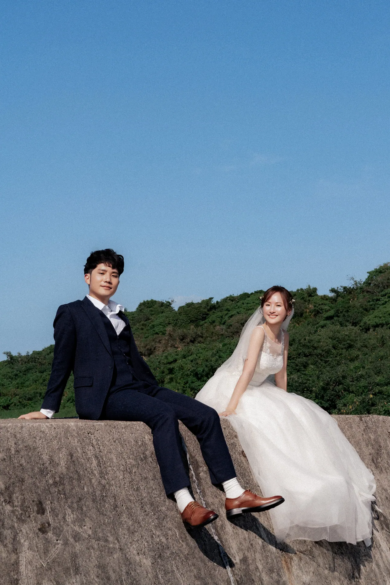

Wish you were here10.31
4108天
Neil & Linda
林昇翰 × 吳優 2026.10.31 格萊天漾 雲詠廳
相冊Toward the sea

No. 47 · 向海♥ 26
傳紙條Postcards
10分鐘前第一次參加朋友的婚禮就是你們的，好開心。— 宥宥
24分鐘前要幸福喔！一直一直幸福下去。— 佩佩
只給
新人優，妳今天好美。昇翰，要好好照顧她喔！— Linda 的阿姨
考考你Quiz
Question 05 / 127 月 20 日對我們來說是什麼日子？